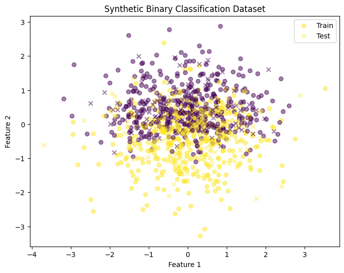
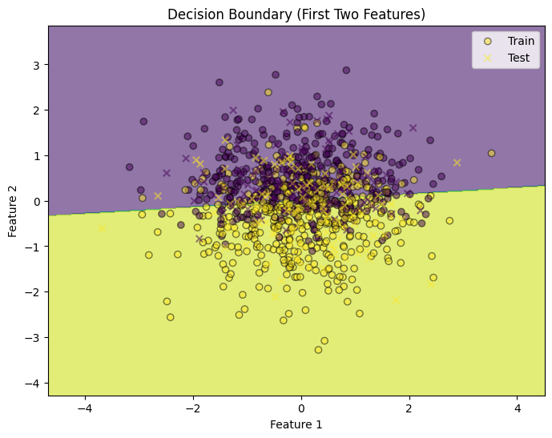
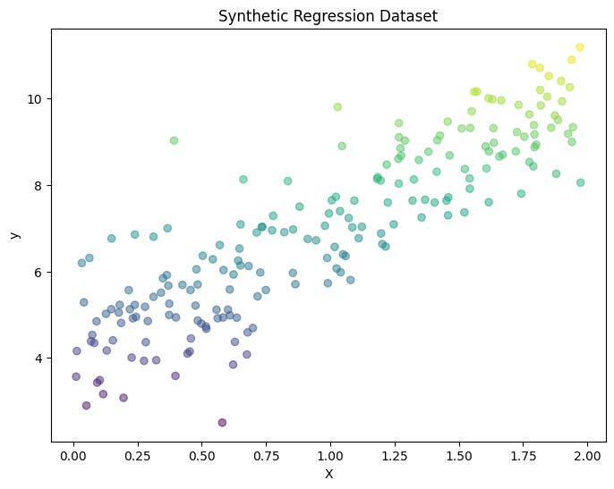
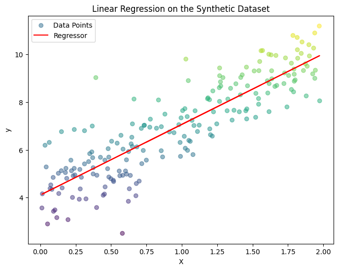
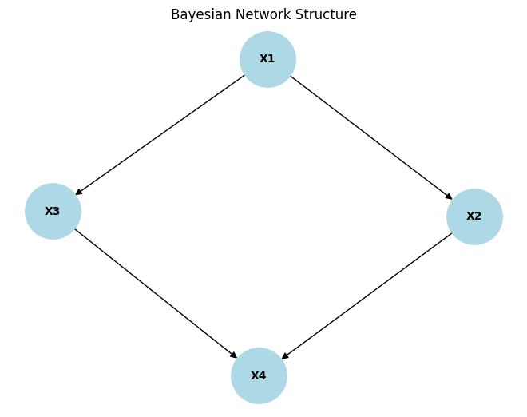

Probability Estimation via Scoring#
import numpy as np
import matplotlib.pyplot as plt
from scipy.stats import norm
import networkx as nx
from sklearn.model_selection import train_test_split
from sklearn.datasets import make_classification
from sklearn.linear_model import LogisticRegression, LinearRegression
from sklearn.metrics import log_loss, mean_squared_error
from sklearn.metrics import accuracy_score, brier_score_loss, r2_score
from pgmpy.models import BayesianNetwork
from pgmpy.factors.discrete import TabularCPD
from pgmpy.inference import VariableElimination
There are various methods in machine learning for inducing probabilistic predictors. These are hypotheses \(h\) that do not merely output point predictions \(h(\vec{x}) \in \mathcal{Y}\), i.e., elements of the output space \(\mathcal{Y}\), but probability estimates \(p_h(\cdot \vert \vec{x}) = p(\cdot \vert \vec{x}, h)\), i.e., complete probability distributions on \(\mathcal{Y}\). In the case of classification, this means predicting a single (conditional) probability \(p_h(y \vert \vec{x}) = p(y \vert \vec{x} , h)\) for each class \(y \in \mathcal{Y}\), whereas in regression, \(p( \cdot \vert \vec{x}, h)\) is a density function on \(\mathbb{R}\). Such predictors can be learned in a discriminative way, i.e., in the form of a mapping \(\vec{x} \mapsto p( \cdot \vert \vec{x})\), or in a generative way, which essentially means learning a joint distribution on \(\mathcal{X} \times \mathcal{Y}\). Moreover, the approaches can be parametric (assuming specific parametric families of probability distributions) or non-parametric. Well-known examples include classical statistical methods such as logistic and linear regression, Bayesian approaches such as Bayesian networks and Gaussian processes (see here), as well as various techniques in the realm of (deep) neural networks (cf. chapter-deep_neuralnetwork/dnn).
Training probabilistic predictors is typically accomplished by minimizing suitable loss functions, i.e., loss functions that enforce “correct” (conditional) probabilities as predictions. In this regard, Proper Scoring Rules (Gneiting and Raftery [GR05]) play an important role, including the log-loss as a well-known special case. Sometimes, however, estimates are also obtained in a very simple way, following basic frequentist techniques for probability estimation, like in Naïve Bayes or nearest neighbor classification.
1. Example: Probabilistic Predictor with Logistic Regression#
Logistic regression is a widely used supervised machine learning method for binary classification that provides probabilistic outputs.
Below is an example using scikit-learn. Let us first make a synthetic binary classification dataset.
Since the dataset has 20 features,
it can be challenging to visualize all features at once. Instead, we use the first two features for a simple scatter plot.
X, y = make_classification(n_samples=1000, n_features=20, random_state=42)
X_2d = X[:, :2]
X_train, X_test, y_train, y_test = train_test_split(X_2d, y, test_size=0.2, random_state=42)
plt.figure(figsize=(8, 6))
plt.scatter(X_train[:, 0], X_train[:, 1], c=y_train, cmap='viridis', marker='o', alpha=0.5, label='Train')
plt.scatter(X_test[:, 0], X_test[:, 1], c=y_test, cmap='viridis', marker='x', alpha=0.5, label='Test')
plt.title('Synthetic Binary Classification Dataset')
plt.xlabel('Feature 1')
plt.ylabel('Feature 2')
plt.legend()
plt.show()

Below we plot the decision boundary for a logistic regression model using the first two features as well.
model = LogisticRegression()
model.fit(X_train, y_train)
h = .02
x_min, x_max = X_2d[:, 0].min() - 1, X_2d[:, 0].max() + 1
y_min, y_max = X_2d[:, 1].min() - 1, X_2d[:, 1].max() + 1
xx, yy = np.meshgrid(np.arange(x_min, x_max, h), np.arange(y_min, y_max, h))
Z = model.predict(np.c_[xx.ravel(), yy.ravel()])
Z = Z.reshape(xx.shape)
plt.figure(figsize=(8, 6))
plt.contourf(xx, yy, Z, alpha=0.6, cmap='viridis')
plt.scatter(X_train[:, 0], X_train[:, 1], c=y_train, edgecolor='k', marker='o', alpha=0.5, label='Train')
plt.scatter(X_test[:, 0], X_test[:, 1], c=y_test, edgecolor='k', marker='x', alpha=0.5, label='Test')
plt.title('Decision Boundary (First Two Features)')
plt.xlabel('Feature 1')
plt.ylabel('Feature 2')
plt.legend()
plt.show()
/var/folders/3p/bdr8j4td0z9bjg8_ngvzj9600000gn/T/ipykernel_68921/2650500348.py:15: UserWarning: You passed a edgecolor/edgecolors ('k') for an unfilled marker ('x'). Matplotlib is ignoring the edgecolor in favor of the facecolor. This behavior may change in the future.
plt.scatter(X_test[:, 0], X_test[:, 1], c=y_test, edgecolor='k', marker='x', alpha=0.5, label='Test')

y_pred = model.predict(X_test)
p_pred = model.predict_proba(X_test)[:, 1]
loss = log_loss(y_test, p_pred)
accuracy = accuracy_score(y_test, y_pred)
brier_score = brier_score_loss(y_test, p_pred)
log_score = -np.mean(np.log(p_pred[y_test == 1]))
print(f"Log Loss: {loss:.4f}")
print(f"Accuracy: {accuracy:.4f}")
print(f"Brier Score: {brier_score:.4f}")
print(f"Logarithmic Score: {log_score:.4f}")
Log Loss: 0.5899
Accuracy: 0.6850
Brier Score: 0.2039
Logarithmic Score: 0.6852
2. Example: Linear Regression#
In statistics, linear regression is a statistical model used for predicting a continuous target variable. Let us also plot a synthetic regression dataset first.
np.random.seed(42)
X = 2 * np.random.rand(200, 1)
y = 4 + 3 * X + np.random.randn(200, 1)
plt.figure(figsize=(8, 6))
plt.scatter(X, y, c=y, cmap='viridis', marker='o', alpha=0.5)
plt.xlabel("X")
plt.ylabel("y")
plt.title("Synthetic Regression Dataset")
plt.show()

Similarly, we train a linear regressor on this dataset and plot them.
model = LinearRegression()
model.fit(X, y)
y_pred = model.predict(X)
plt.figure(figsize=(8, 6))
plt.scatter(X, y, c=y, cmap='viridis', marker='o', alpha=0.5, label='Data Points')
plt.plot(X, y_pred, c='red', label='Regressor')
plt.xlabel("X")
plt.ylabel("y")
plt.title("Linear Regression on the Synthetic Dataset")
plt.legend()
plt.show()

Note
We here calculate the Mean Squared Error (MSE), \(R^2\), and Continuous Ranked Probability Score (CRPS) for this regression problem because Brier Score and Logarithmic Score are typically used for probabilistic classification models.
def crps(y_true, y_pred):
residuals = y_true - y_pred
y_std = np.std(residuals)
crps_values = []
for i in range(len(y_true)):
mu = y_pred[i]
sigma = y_std
obs = y_true[i]
term1 = np.abs(obs - mu)
term2 = sigma * (1 / np.sqrt(np.pi))
term3 = 2 * sigma * norm.pdf((obs - mu) / sigma)
crps_value = term1 + term2 - term3
crps_values.append(crps_value)
return np.mean(crps_values)
crps_score = crps(y, y_pred)
mse = mean_squared_error(y, y_pred)
r2 = r2_score(y, y_pred)
print(f"Continuous Ranked Probability Score: {crps_score:.4f}")
print(f"Mean Squared Error: {mse:.4f}")
print(f"R^2 Score: {r2:.4f}")
Continuous Ranked Probability Score: 0.7551
Mean Squared Error: 0.9338
R^2 Score: 0.7647
3. Example: Bayesian networks#
# (UAIML: Slides 31&32)
model = BayesianNetwork([('X1', 'X2'), ('X1', 'X3'), ('X2', 'X4'), ('X3', 'X4')])
cpd_X1 = TabularCPD(variable='X1',
variable_card=2,
values=[[0.6], [0.4]])
cpd_X2 = TabularCPD(variable='X2',
variable_card=2,
values=[[0.7, 0.2], [0.3, 0.8]],
evidence=['X1'],
evidence_card=[2])
cpd_X3 = TabularCPD(variable='X3',
variable_card=2,
values=[[0.8, 0.5], [0.2, 0.5]],
evidence=['X1'],
evidence_card=[2])
cpd_X4 = TabularCPD(variable='X4',
variable_card=2,
values=[[0.9, 0.4, 0.7, 0.1], [0.1, 0.6, 0.3, 0.9]],
evidence=['X2', 'X3'],
evidence_card=[2, 2])
model.add_cpds(cpd_X1, cpd_X2, cpd_X3, cpd_X4)
assert model.check_model()
G = nx.DiGraph()
G.add_nodes_from(['X1', 'X2', 'X3', 'X4'])
G.add_edges_from([('X1', 'X2'), ('X1', 'X3'), ('X2', 'X4'), ('X3', 'X4')])
pos = nx.spring_layout(G)
nx.draw(G, pos, with_labels=True, node_size=2500, node_color='lightblue', font_size=10, font_weight='bold', arrowsize=12)
plt.title("Bayesian Network Structure")
plt.show()
inference = VariableElimination(model)
result = inference.query(variables=['X4'], evidence={'X1': 1})
print(result)

+-------+-----------+
| X4 | phi(X4) |
+=======+===========+
| X4(0) | 0.4500 |
+-------+-----------+
| X4(1) | 0.5500 |
+-------+-----------+